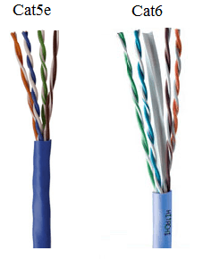
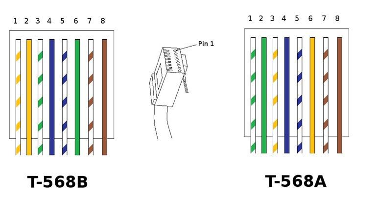

Category Cable
Category Cable (Cat) comes in different ways. What we use now mainly is Cat5e cable. but there are some
areas where you will come across cat 3 and cat 4 but usually we will run cat5 wire in their place.
Cat3 Cable only has a data rate of 10 mbps, it is inefficient on modern networks.
cat5 cable has a data rate up to 100 mbps and candistribute data, video and telephone signals at distances
up to 100 meters .
cat5e is not an official designation but it is the cable we most often run and work with within our IP
camera network.
it's data rate goes up to 1gbps.

at the end of Category cables you will find (mostly) RJ45's. The 8 position 8 contact twisted pair
jack
is the most common and standardized way to connect
telecommunincation and data equipment.
These will be used when connecting any equipment of ours to our IP network. Our Avigilon digital IP
cameras and patch cables are where you will use this most.
-Color patterns
rj45s have specific patterns of wiring called pinouts. such as T-568A and T-568B, and the crossover
pinout.
The standard we use is T-568B. Each end of the cable must have a matching pinout to ensure proper
distribution of data. If they are not the same, the cable will not work

The process for terminating a Cat cable is simple and tedious, but can often be done wrong. First you
must strip the shielding of the cable to expose the 4 pairs of wire.
untwist each pair and straighten them to the best of your ability.
manipulate the wire to be in the pattern of your choice (t568b) and ensure they are flat and.
you will slide the rj45 over the wires while the pins of the jack are facing you.
Ensure the pattern is correct within the jack and use the crimper to secure the termination.
once each side is terminated you can test it with the LinkMaster Wiremapper and Tester
